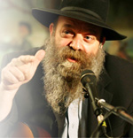

Tanya Life Workshop
The mashpia, R’ Yair Calev, known for his lectures on Tanya, speaks with Beis Moshiach about the personal significance of Tanya for each one of us. * He explains how the learning becomes alive within us, so that our avodas Hashem becomes a workshop for life and a Torah of life, that bestows meaning

That question has numerous answers since there are numerous perspectives. The central theme of Yud-Tes Kislev is that it is Rosh HaShana L’Chassidus. Since we are talking about Chabad Chassidus, which is about bringing the teachings of the Baal Shem Tov and Chassidus in general into an intellectual understanding, this day expresses the essence of Chassidus.
The purpose of Chabad Chassidus is to bring down the highest of the high into the lowest of the low, for that which descends the lowest is coming from the highest source. There is the analogy in Chassidus of the teacher who can constrict his intellect so that his student can learn from him. So too, Chabad Chassidus constricts G-dly wisdom to the level of the physical reality in the world which conceals the truth, and to the material reality of the world which denies the truth.
It is explained in Chassidus that when a teacher knows the subject matter well for himself but cannot explain it to someone not as great as him, this shows that he still doesn’t have a thorough grasp of the material himself. In other words, the ability to bring down lofty ideas is rooted in the essence of those ideas. In order to truly bond with a given message it must be so engraved in you that you can bring it down to the lowest possible place. That is the purpose of creation and why Hashem created the world, to bring G-dliness down to earth.
As spiritual as man might be, he is still only living with the outward illumination and hasn’t gotten to the essence of the thing. The Alter Rebbe’s goal with Chabad Chassidus was to bring down G-dliness within nature without having to change it, i.e. with nature remaining as it is. That is the chiddush of the Alter Rebbe which is why this point is emphasized throughout Tanya, unlike the other students of the Rav HaMaggid whose main avoda was hiskashrus to the tzaddik.
In Chabad, the Rebbe provides spiritual strength and encouragement but you must do the work yourself. There is no substitute for doing your own work and it is this which causes the tachton (lowly being/existence) to connect with the highest level of G-dliness. The avoda, according to Tanya, is to get the tachton out of his natural state so that within his natural state he conducts himself in a way of mesirus nefesh and total dedication to holiness.
How does all this apply to people like us?
In Chassidus it explains that by a Jew serving Hashem, he is empowered with the power of the Creator within the physical creation. In order to do this, he needs to connect to the level of ayin, i.e. bittul, to put himself aside, eliminating his personal desires, because Hashem desires that G-dliness reach the tachton. Tanya teaches us how to get out of our egocentric view, out of the picayune interests that interfere with our avoda. Putting aside one’s very being means abandoning the games of the child within him and getting out of his personal limitations. This avoda is accomplished with mesirus nefesh-mesirus ratzon.
What can we “take” from this day of Yud-Tes Kislev?
Yud-Tes Kislev is our day, the day of mekablim (recipients), of Chassidim. It is the day that is a distillation of the purpose of creation which is about elevating the tachton. This is the central theme which we need to focus on. Like everything in Chabad Chassidus, in order to get something out of this day, we need to increase the kabbalas ol to serve the right thing because it is right. Kabbalas ol is above reason because avoda needs to be done even when I really don’t want to and even when it means giving up on the self-restricting constraints of self-love.
Chassidus, which is the neshama of the Torah, teaches how the oil is revealed as a result of crushing. Just as the olive produces oil, a person reveals within himself the power of mesiras nefesh for the service of G-d through the very work itself. The Alter Rebbe was the first one to show us the way, through his own actions. The Rebbe Rashab says that the “crushing” of the imprisonment of the Alter Rebbe, is what produced his oil. After his imprisonment, his avoda was tremendously accelerated both qualitatively and quantitatively, as we see in the later maamarim that elucidate the greatest secrets of the Torah with a tremendous increase in explanations.
The Alter Rebbe’s release from jail is our Geula. In Tanya he explains, by way of the various topics that he covers, the very essence of the entirety of p’nimius ha’Torah. The central theme of Tanya is that it is impossible to help someone who does not help himself and all of Tanya is full of tools to enable us to help ourselves.
You speak about mesirus nefesh. You don’t think that’s too lofty for Chassidim like us?
There is a natural tendency to relate to Tanya as a lofty book, since even the level of beinoni sounds beyond our reach. However, the truth is not like that at all. Tanya speaks to each of us personally so that each one of us can incorporate the concepts in whatever place we find ourselves and wherever we are holding in life. As it says in chapter 13 of Tanya, a person has to be true to his own absolute truth, not necessarily the level of the truth of the Baal HaTanya. The entire seifer speaks to a person on the level he is on.
Many people, by thinking that this book is lofty, shirk the responsibility of doing the avoda. If a person doesn’t think Tanya relates to him, he won’t bother working to implement the ideas it presents. The Alter Rebbe demands that we bring the ideas into our daily lives. All problems begin when we treat Tanya as something esoteric.
The Alter Rebbe chooses to address the beinoni, saying that this level is what is expected of every person and this is what he should be working towards his entire life. We are not expected to despise evil, to be a tzaddik who eradicates evil from his life, but to be a beinoni whose evil inclination is constantly at work. Sometimes, the yetzer lulls us with all kinds of spiritual experiences that make us feel complacent. We feel that we don’t have to work harder and that now, avoda will come easy to us. We cannot forget that a beinoni is always working. He never rests.
How does this avoda dovetail with what the Rebbe said about the Geula?
We need to “steal” some moments of being on the level of beinoni, in which the past is history and the future is ahead of us and we live in the moment. In this moment, I am in the best possible state and I am heading towards the right place. In the sichos of 5751-5752, the Rebbe talks to us about living with the Geula right now, dragging the Geula into the room, dragging the Geula into the galus. Be in a state of Geula and get those around you to live in a state of Geula.
The beinoni is constantly living in the moment. Every moment is something new that never was and will never be again. We need to be in the moment to empower the G-dly soul over the animal soul in the here and now. This is the point, that G-dliness penetrate our understanding, within the chochma, bina and daas of the natural intellect which is driven by self-interest. That is also why we need to explain things to it in a self serving way in order to harness its desires to the truth.
The Tanya teaches us the meaning of “kirvas Elokim li tov” (closeness to G-d is good for me) and this must be done by each person, wherever he is at. Each of us has an asafsuf (the mixed multitude who left Egypt with the Jews) inside. The asafsuf wants only that which is worthwhile to him, and since it’s fun to be a Jew, he left Egypt with the Jews. Chassidus explains that this is something we have within each of us. It’s an attitude that is not coming from k’dusha and it needs to be harnessed to k’dusha so that it serves truth. In order to draw G-dliness down into the world, I need to start with myself, with the animal within me that needs to be tamed.
The Alter Rebbe taught us what avodas Hashem is and emphasized that avoda starts with inner change, by taking responsibility for what I do, not to run away and make excuses, not to look for those at fault, but to face myself and do the right thing because it’s right, even if it does not pay off now and doesn’t “suit me.” Tanya teaches that each of us is a unique entity and bears responsibility for the fulfillment of the purpose of creation, because “the world was created for my sake,” for my avoda that I cannot shirk. That is our mission in the world.
Can we actually live that way?
When we were kids, we experienced humiliating moments, i.e. silly things or embarrassing things like wetting ourselves. What ramifications are there for our lives today? Do we feel like we are kids who can do those silly things again?
Today, when we look back at those childish behaviors that were done when we didn’t have daas, we know that isn’t us. It happened, but we have moved past it.
That’s what a beinoni is about. At this moment, he lives in a frame of consciousness in which he never sinned and never will sin. The Rebbe taught us in chapter 12 of Tanya that the beinoni doesn’t measure his actions in a historical context, but in an attitudinal context.
All of Judaism is t’shuva, i.e. returning to the G-dly point within me, to the point of truth within me. The beinoni does not hate evil as a tzaddik does; he is drawn towards evil and he is weak, his yetzer is powerful and it is not for naught that the Torah describes it as “sin crouching at the door.” The avoda is for people like us. We have the job of transforming the reality of the beinoni into the reality of our lives.
We tend towards an “all or nothing” approach, either I’m a complete tzaddik or I’m a rasha. When I see that I am far from being a tzaddik, I realize that it’s not realistic for me and that makes me sad. Tanya teaches us that we need to have the ambition of being a beinoni and not be broken by not being a tzaddik, because this is our avoda. It’s an avoda of growth, of being better today than yesterday, of looking at our progress. This avoda is accomplished through contemplation and not just by learning, which is only a matter of acquiring knowledge. A person has to actually live the meaning of his own life, each and every day, and to feel that we are making daily progress. Someone who lives this way is constantly changing, because he must bring that which infuses his life from the potential into the actual.
(To be continued)
THE MASHPIA WHO BRINGS TANYA TO THE PEOPLE
Rabbi Yair Calev is known to thousands of talmidim as the Singing Rabbi. He travels all over Eretz Yisroel and teaches Tanya. He combines his lectures with Chassidic niggunim that he sings while accompanying himself on the guitar.
He himself is a talmid of R’ Meir Blizinsky (see issue # 814) whom he met when he was 27 and R’ Meir was over 80. Despite the sizable age difference, they became chavrusas and R’ Calev learned all of Tanya with him as well as Likkutei Torah and Torah Ohr.
R’ Calev experienced clinical death and hovered between heaven and earth for five days. He miraculously regained consciousness and devoted his life to spreading the teachings of Tanya. He runs a blog where he teaches Tanya that reaches tens of thousands of readers every week.
He is wont to say that Tanya has been translated into all languages but still needs to be translated into Ivrit. This he does very capably by explaining the concepts clearly as they apply to people’s situations and understanding.
Even today, he lives with the first learning of Tanya he did as a young man in Ramat Gan over thirty years ago. He conveys his enthusiasm for living every moment with the timeless messages of the Alter Rebbe.
Sholom Ber Crombie. "Tanya Life Workshop." Beis Moshiach, no. 858 (November 28, 2012).